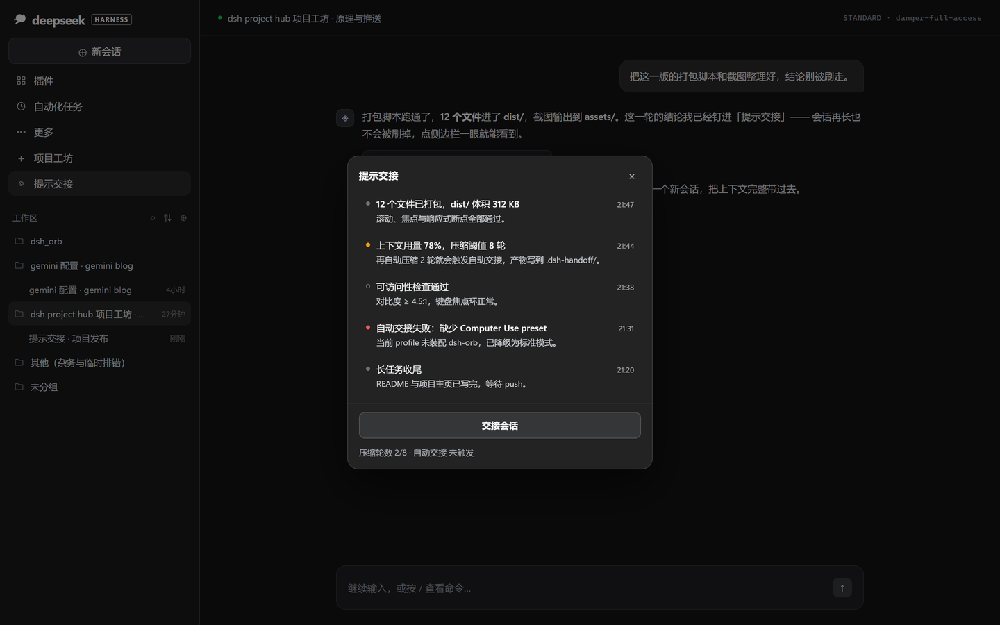
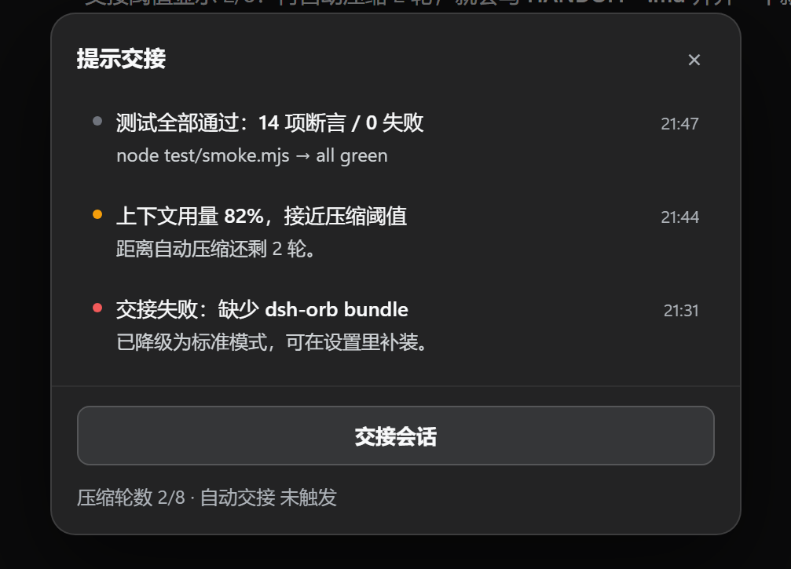
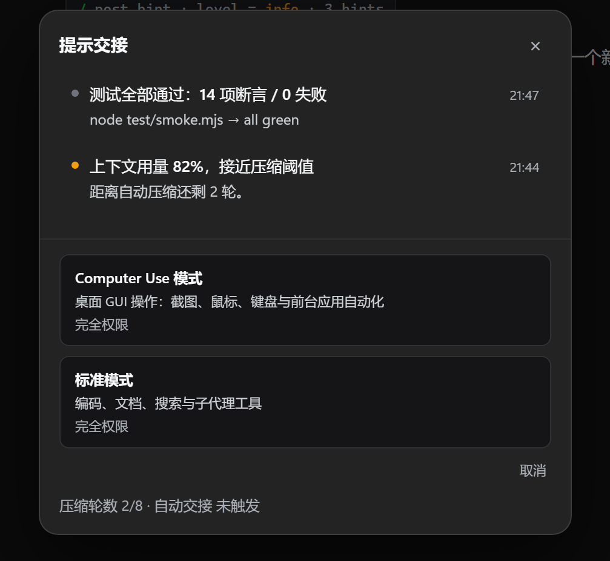

提示交接
把重要提示钉在侧边栏，而不是让它们被 transcript 刷走。
一个入口、一块公告板、一颗把当前会话交给下一个会话的按钮。

重要的东西，
不该只活 3 秒。
长任务里真正会被漏掉的，往往不是报错本身，而是「跑完了」「要你选」「降级了」这三类安静的事件。
warn 常驻 + 未读圆点，不会随滚动消失error 红点一直亮着，直到你打开面板普通通知是「喊一声」，提示交接是「贴在冰箱上」。 ——所以它值得一个常驻的侧边栏入口，而不是一枚 3 秒就消失的 toast。
一块安静的公告板。
零第三方依赖、纯本地存储。级别只体现在左侧圆点，正文永远同一套排版。
侧栏原生入口
紧跟「项目工坊」的一行提示交接，DOM 克隆原生行样式；位置被占就依次下移，永不覆盖别家插件。
post_hint 工具
Agent 自己推提示：任务完成、需要决策、降级失败。标题 + 可选正文 + info / warn / error 三级。
已读 / 未读
未读实心圆点、已读空心；最多保留 50 条环形缓冲，最新在上。可选 JSON 持久化，重启不丢。
交接会话
写 HANDOFF-*.md + 归档 session.jsonl + 开新会话；Computer Use / 标准双模式，均完全权限。
真实阈值自动交接
只统计已完成的自动压缩轮数，状态行显示真实 x/y；手动 /compact 不计入，不写死数字。
完全本地
零第三方依赖、无网络请求；数据在内存或你指定的 JSON 里，随手可删。
它长什么样。
深色面板、真实状态行、三级圆点。所有截图取自插件实际界面（会话内容已替换为演示数据）。


让 Agent 自己贴便签。
模型通过 post_hint 推提示；本地脚本也能走 /hint/push。
| 参数 | 类型 | 说明 |
|---|---|---|
title | 必填 | 一行标题，列表里加粗显示（截断到 160 字） |
body | 可选 | 补充说明：发生了什么、下一步做什么（截断到 1200 字） |
level | 可选 | info · warn · error，默认 info |
{ ok, id, level, unread, total }title 可省略但 body 必须存在：此时正文第一行会被提升为标题。
// Agent 调用 post_hint，把一条提示推进面板 { "title": "构建完成：12 个文件已打包", "body": "dist/ 体积 312 KB，滚动、焦点与响应式断点全部通过。", "level": "info" } // 本地脚本也可以直接走 HTTP curl -s -X POST http://127.0.0.1:9760/hint/push \ -H 'Content-Type: application/json' \ -d '{"title":"部署完成","level":"info"}'
聊聊你怎么用它。
用法问题、想法、作品展示都欢迎。帖子里的截图记得脱敏，别贴 token 和真实路径。
交接后的新会话没有继承 cwd，是预期行为吗？
从面板点「交接会话」→ 标准模式，新会话的工作目录落在了 DSH 的默认目录，而不是原来的子工作区……
能不能按项目分组提示？把 .dsh-hub 的项目上下文带进面板
现在所有提示是一个扁平列表。如果按项目 / 小标签分栏，切项目时只看到这一摊的提示，会更像「冰箱上的分区便签」。
用提示交接盯 CI：每天早上把失败汇总钉在侧边栏
写了个小脚本，每晚用 /hint/push 推一条 error 级别的汇总。第二天打开 DSH，红点就在那等着，不用翻日志。
v0.1.0 首发：warn 圆点改为琥珀色，交接状态行显示真实 x/y
这一版把两个本地插件合并成一个入口：提示面板 + 自动交接。欢迎在 Discussions 里报真机踩坑。
三分钟装好。
放进 ~/.dsh/plugins/，加进 profile，重启 DSH。插件自带 bundle patch，不用手改内部文件。
- 1放进插件目录
目录名必须是dsh-hint-handoff，与package.json的 name 一致。 - 2装配到 profile
编辑~/.dsh/profiles/desktop/package.json：加进bundles与dependencies（见右）。 - 3重启 DSH
侧边栏「更多」下方出现 ◎ 提示交接；点击即开面板。 - 4推一条试试
让 Agent 调用post_hint，或curl /hint/push。
git clone https://github.com/systemsssx/dsh-task-resume.git \
~/.dsh/plugins/dsh-hint-handoff
git clone https://github.com/systemsssx/dsh-task-resume.git ` "$env:USERPROFILE\.dsh\plugins\dsh-hint-handoff"
{
"dsh": {
"profile": {
"bundles": ["@deepseek-ai/dsh-base", "@deepseek-ai/dsh-web-app",
"dsh-hint-handoff"], // ← 新增
"patchReload": "live"
}
},
"dependencies": {
"dsh-hint-handoff": "link:C:/Users/<you>/.dsh/plugins/dsh-hint-handoff"
}
}
常见问题。
还有没覆盖的？去 Discussions 的 Q&A 分类直接问。
装好后侧边栏没有「◎ 提示交接」？
确认 profile 的 bundles 里有 dsh-hint-handoff、dependencies 里有对应 link:，目录名与 package.json 的 name 一致，然后完全重启 DSH（不是只刷新页面）。
提示默认只存在内存里，重启会丢吗？
会。需要保留就设置 persistPath（如 .dsh-hints.json），插件会在每次变更后 250ms 防抖落盘。
自动交接什么时候触发？
只统计已完成的自动压缩轮数（手动 /compact 不计）。达到 threshold 才触发；状态行显示真实计数 x/y。
「交接会话」点了没反应？
交接只在安全时机执行：当前回合结束、没有未返回的工具调用、没有压缩在进行。错误会显示在状态行，不会静默失败。
Computer Use 模式不见了？
这是预期降级：当前 profile 没有提供 computer-use preset 的 bundle（例如 dsh-orb）。补装后重启即可出现。
会上传我的提示吗？
不会。插件零第三方依赖、没有网络请求，数据只在本机内存或你指定的 JSON 文件里。